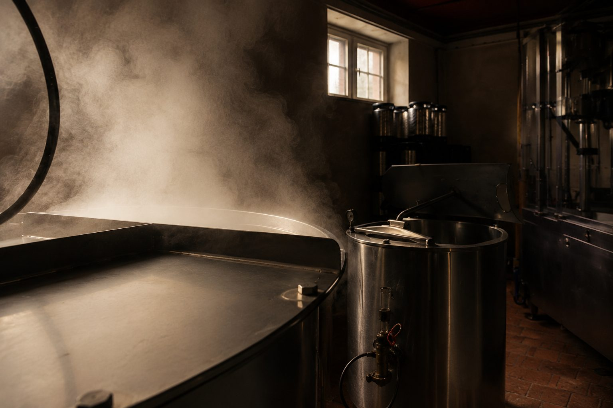
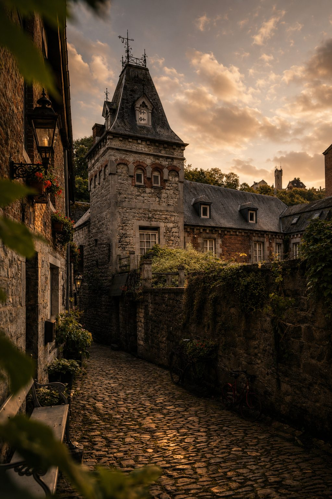

Durbuy · Belgique
Brasserie du Château de Durbuy
À son rythme, entre tradition et précision. Sans bruit.
— Chapitre I —
Le domaine précède le geste
Le Lieu
Avant le brassin, le lieu.
Les pierres. La rivière. Les anciennes écuries du château.
Un domaine qui impose son tempo. La brasserie le suit, sans l'altérer.

— Chapitre II —
Fermentation traditionnelle
La Brasserie
Installée dans les anciennes écuries du domaine, la brasserie élabore quatre bières de fermentation traditionnelle, en petites séries.
Le geste n'est pas nouveau. Une brassine est attestée à Durbuy depuis le XVIe siècle, sous la garde de la famille d'Ursel depuis 1628.

Au cœur du domaine. Au rythme du lieu.
— Chapitre III —
Quatre. Brassées au château.
Les Bières
Chacune dans son propre tempo. Petites séries, fermentation traditionnelle.

-
Blonde du Château
6,4°
Pain frais, miel pâle, finale sèche. La lumière d'une fin d'après-midi.
-
Bohemian Pilsner
4,6°
Cristal et céréale, amertume franche. La précision tchèque, prise en estate.
-
IPA
5,3°
Sorachi Ace : citron vert, herbes coupées. Tension fraîche, jamais bruyante.
-
Amber Ale
6,2°
Caramel, écorce, foin sec. La couleur d'un soir d'automne sur l'Ourthe.
Le domaine continue après le brassage.

— Chapitre IV —
Sur réservation
La Brasserie & les Jardins
Le domaine n'ouvre ses portes que sur réservation. Jardins, brasserie, dégustations — à un nombre restreint d'invités.
Le château est un espace privé et ne se visite pas.
Dégustations
Sélection de quatre bières du domaine.
Les Jardins
Accès aux jardins et promenades au bord de l'Ourthe.
La Brasserie
Visite guidée. Le geste, la fermentation, le rythme.
Événements privés
Mariages, réceptions, dîners privés.
Bières du domaine
Notre sélection, à emporter ou à offrir.